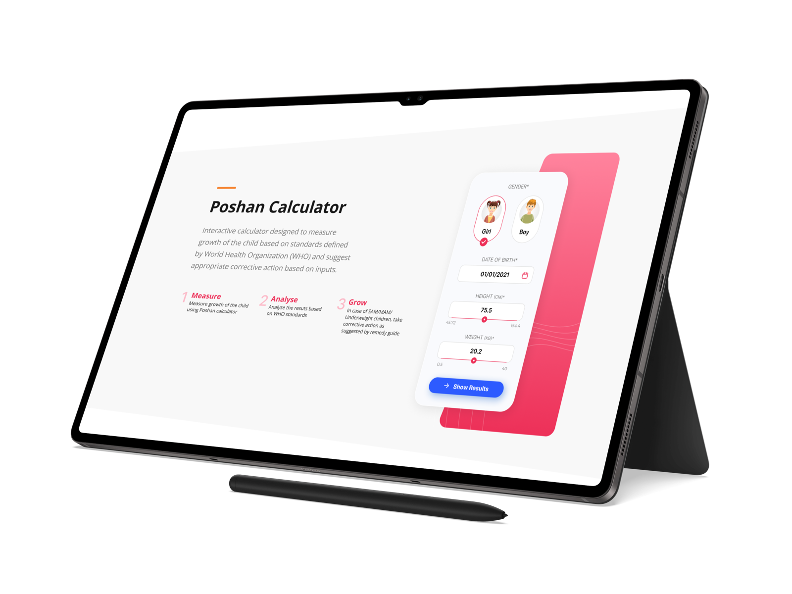
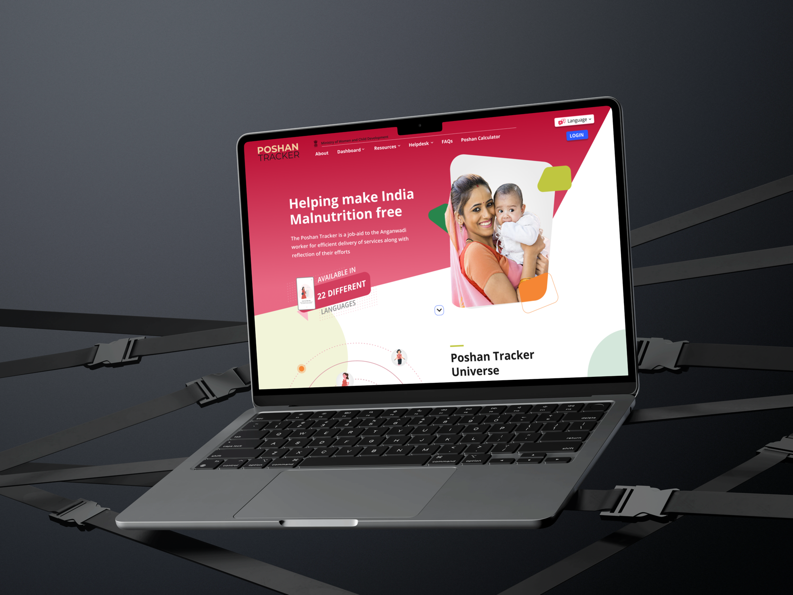

Worked with the Head of UX Design in a 3-person team to design Poshan Tracker, a national nutrition-tracking app used by frontline Anganwadi health workers across India, across both web and Android platforms.
About Poshan Tracker
Poshan Tracker is a Government of India initiative supporting Anganwadi (childcare and nutrition) services, used by frontline health workers to track child nutrition, immunisation, and growth monitoring data across the country. View live platform →
Digital India Corporation · UI/UX Design Intern · May 2022 – July 2022
Anganwadi workers operate in low-connectivity rural areas, juggling paperwork-heavy workflows with varying digital comfort levels. Every design decision had to account for these real-world field constraints, not an office user with stable WiFi.
Designed interfaces prioritising clarity over density: large touch targets, minimal text-entry requirements, and visual icons over text labels where possible, supporting workers with varying literacy and digital comfort. Followed government accessibility guidelines throughout.
Worked on streamlining data entry flows for child growth monitoring and nutrition tracking, reducing steps and taps for routine entries that health workers repeat dozens of times daily, minimising cognitive load under time pressure.

Poshan Calculator: measures child growth against WHO standards and suggests corrective action

Poshan Tracker: the public-facing platform, available in 22 languages
Contributed interface decisions to a platform supporting India's national nutrition-tracking infrastructure, design choices affecting the daily workflow of frontline workers serving some of the country's most vulnerable communities.
Designed two distinct interfaces serving two different user contexts: the web admin dashboard used by supervisors at desks, and the Android field app used by workers on-the-go in villages.
Designed a data-dense supervisor dashboard for monitoring nutrition data across multiple Anganwadi centres, requiring clear information hierarchy and comparative views without overwhelming supervisors managing large geographies.
Designed the field app with a single-task-at-a-time approach: each screen dedicated to one data entry action, minimising errors in low-connectivity, high-interruption field conditions. Worked within Android's material design guidelines adapted to the government design requirements.
Navigated a review and approval process distinct from private-sector product teams, working within government accessibility and compliance guidelines and presenting design rationale to stakeholders with public-service priorities: equity of access, language support, low-bandwidth performance.
Designing for real-world constraints far from a typical urban smartphone user reshaped how I think about accessibility. Low connectivity, varied literacy, and time pressure aren't edge cases here; they're the primary conditions.
Low connectivity, varied literacy, and time pressure under field conditions reshaped how I think about accessibility for good.
More stakeholders, more compliance, slower iteration. I learned to work within structure rather than against it, a skill that scales to large organisations.
The user wasn't optimising for engagement; they were trying to do their job well, serving vulnerable communities. It clarified why I'm drawn to social-impact design.
In a 3-person team there was no room to hide behind specialisation. Contributing across research, design, and stakeholder comms was a crash course in full-stack design thinking.
Questions about this role?